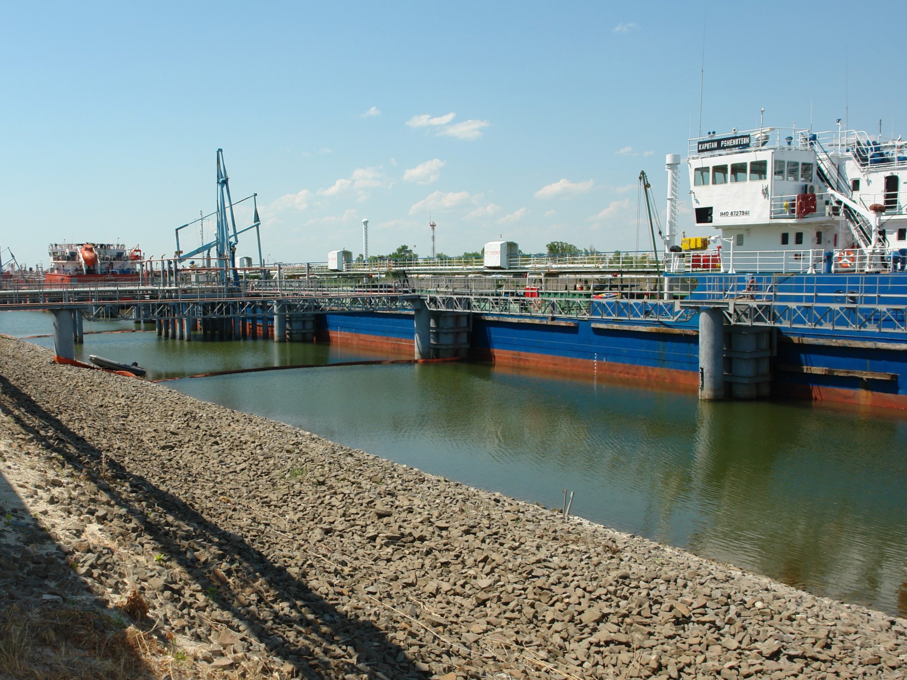
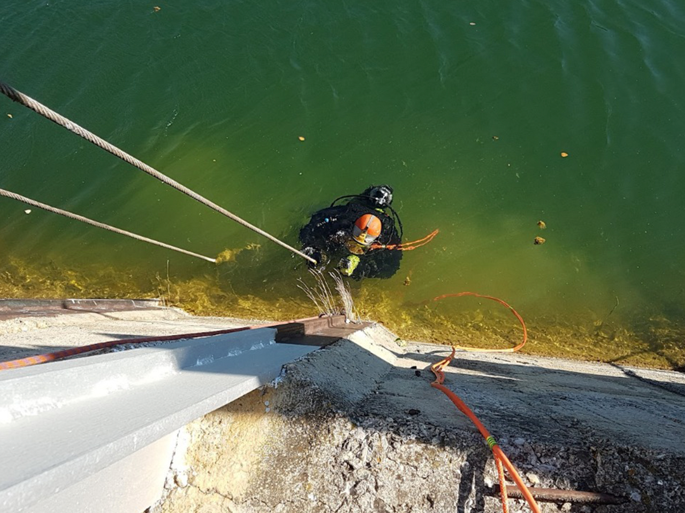
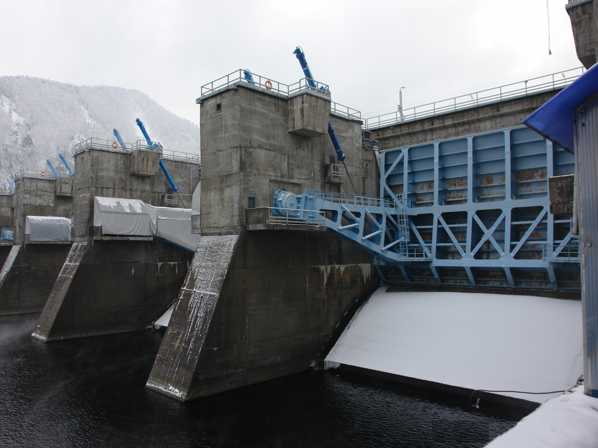
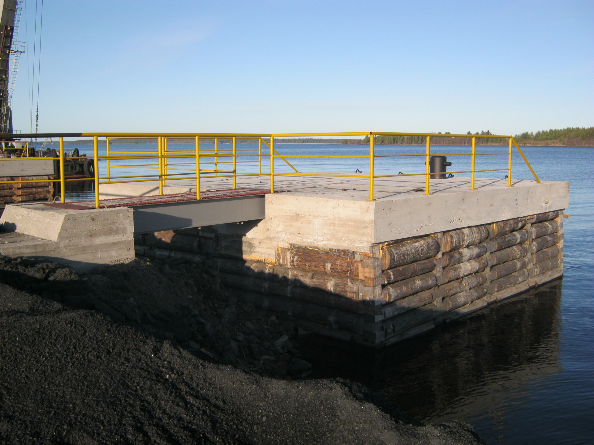
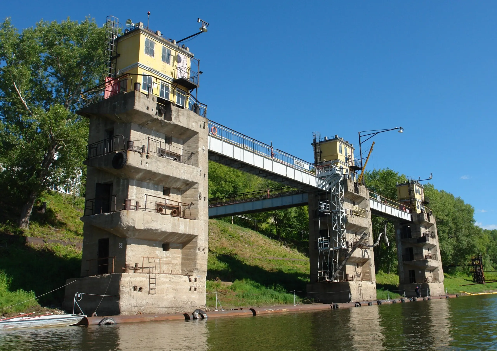

Обследование · Мониторинг · Проектирование
Безопасная эксплуатация гидротехнических сооружений
Комплексно оцениваем состояние портовых ГТС, разрабатываем техническую документацию и проекты восстановления.

О компании
Инженерные решения опираются на точные данные о состоянии сооружения
Оценка состояния перед реконструкцией или восстановлением достигается путем комплексных визуально-инструментальных обследований. Мы изучаем объект, фиксируем дефекты и формируем понятные рекомендации для дальнейшей эксплуатации.
Единый исполнитель для обследования, проектирования и восстановительных работ.
Услуги
Что мы делаем
Работы для безопасной эксплуатации портовых и других гидротехнических сооружений.
Освидетельствование, паспортизация и идентификация
Предпроектное обследование причалов, разработка паспортов и протоколов идентификации.
02Геодезические сети
Разработка проектов и устройство геодезических сетей на причалах.
03Водолазное обследование
Подводные технические работы, фото- и видеофиксация дефектов.
04Планово-высотный мониторинг
Технические осмотры, геодезические наблюдения и измерительный контроль.
05Проектирование
Проекты реконструкции, ремонта и восстановления гидротехнических сооружений.
06Эксплуатационные документы
Разработка и ведение технической документации по сооружению.
07Комплексное обследование ГТС
Определение физического износа конструктивных элементов и сооружения в целом.
08Восстановление и реконструкция
Реконструкция, восстановление и дооснащение портовых ГТС.



Порядок работ
Три этапа комплексного обследования
Последовательно собираем исходные данные, проверяем состояние объекта и подтверждаем выводы измерениями.
-
01
Подготовка
Разработка программы обследования, изучение объекта, конструктивных решений и условий эксплуатации.
-
02
Визуальное обследование
Определение состояния отдельных элементов и объекта контроля в целом.
-
03
Инструментальное обследование
Измерение параметров конструкций, прочности бетона, толщины металла, уклонов и геодезическая съемка.

Нормативная база
Связаться
Расскажите о вашем объекте
Оставьте заявку на коммерческое предложение или свяжитесь удобным способом.